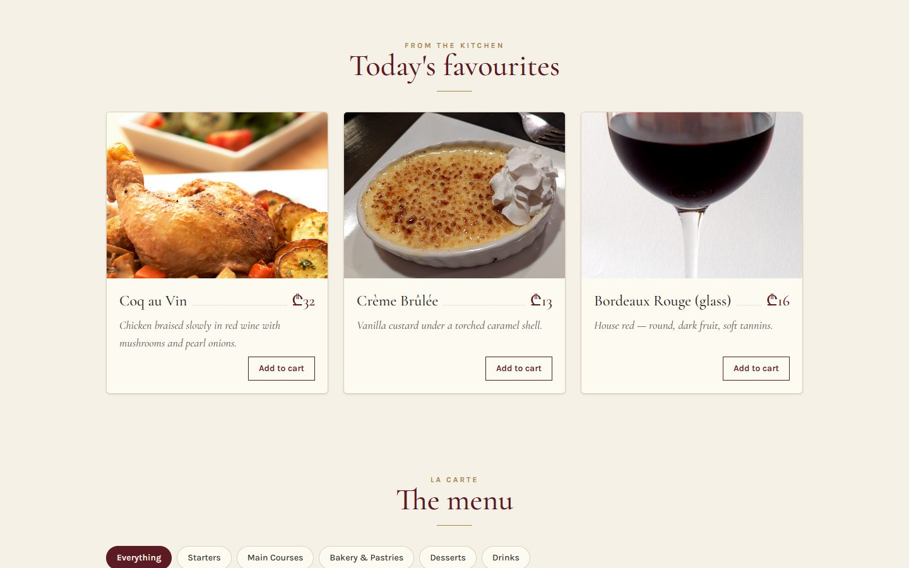
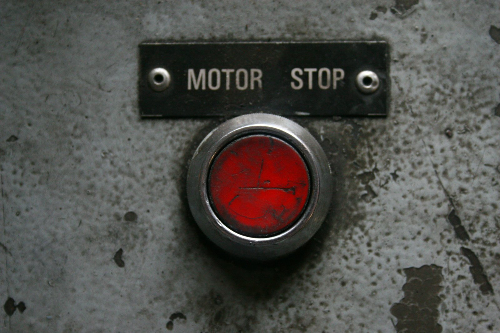

Bonjour!
L28 React · lecture 3 · Le Bistro track 2 of 5
À la
minute
State and events. "À la minute" means cooked to order, the moment the guest asks. Today Le Bistro starts reacting to every click.
- Theme
- useState, events, lifting state
- Le Bistro today
- A cart that counts, filters
- Your project
- v0.2 · cart and filters
- Length
- 2 hours · one break

Le Bistro · L28 · 120 minutes
Today's menu
- AccueilHello where Le Bistro is today3′
- ApéritifQuestions and two homework demos8′
- EntréeProblem 1 click, nothing happens5′
- PlatuseState and events the render cycle24′
- AtelierClasswork 1 make it move15′
- Pause caféBreak music on, screens off10′
- Second platProblem 2 and lifting state one cart, two places27′
- AtelierClasswork 2 with AI prompt it, then check it15′
- MasterclassOne prompt, the whole Le Bistro CRAFT, then the short version8′
- DessertWrap-up recap, homework, next time5′
Route Lecture 2 of 5
Le Bistro, lecture by lecture

L27 · done
Components
Home page and menu from components and a data file.

L28 · today
State
Add to cart works. Chips filter, search finds.

L29
Effects
The real menu from the API. A cart that survives a refresh.

L30
Routing
Pages with their own address. Login and staff-only doors.

L31
Context
One cart and one session for the whole site.
Today's goal Press next to unveil it
From a photograph to a restaurant
Left, Le Bistro at the end of L27: everything is there, nothing reacts. Under the curtain: the end of today.
- "Add to cart" turns into a quantity stepper
- "Your order · 3" counts, the panel lists the dishes
- Chips filter the menu, the search box finds

After L27After todayApéritif Before we start
Questions from last time?
Components, props, lists, children. Anything that broke in your v0.1 is a good question.
What does key do in a list?
It gives each item a stable name, so React can tell the items apart when the list changes. Use the id, never the index.
What arrives in children?
Whatever you write between a component's opening and closing tags.
Can DishCard change dish.price?
No. Props are read-only. Today we see the right way to change data: state.
Homework check Two volunteers, two minutes each
Show us your v0.1
Open your live Vercel link. Then open one component in VS Code.
Look for
- One component per file, capital names
- A props type on every component
- Products from one data file
key={product.id}, not the index- A Section with
children - A live link that works
Entrée · Problem 1 Before the new tool
Click.
Nothing happens.
"Add to cart" must count. With what we know so far, the page never changes after it appears.

Problem 1 Try it
A plain variable is not enough
The variable changes. The screen does not.
Watch the console: 1, 2, 3. The button keeps saying 0.
Problem 1 What really happens
Why the screen doesn't change
React drew the button once
It called DishCard(), got JSX with qty = 0, and put it on the page. Then it waits.
Nobody told React
Changing a local variable is invisible to React. It has no reason to call DishCard() again.
Even if it did…
…the function would start from the top: let qty = 0. The count would be lost.
Problem 1 Your turn
What would React need to update the screen?
Plat · Solution 1 The tool
useState in one line
qty
The value for this render. Read it in the JSX.
setQty(2)
"Remember 2 and draw me again." React re-renders the component.
useState(0)
The first value, used on the first render only. React keeps it after that.
import { useState } from "react"; · Call it at the top of the component, never inside an if or a loop. Functions that start with use are called hooks.
Solution 1 What happens on a click
Trigger. Render. Commit.
You ask
The click handler calls setQty(qty + 1). React puts a re-render in its queue.
React calls you
React runs DishCard() again. This time useState hands back the new value.
React updates the page
React compares the new JSX with the last one and changes only what differs.
Solution 1 Drag into the right order
From a click to a new screen
React calls DishCard() againRenderThe user clicks "+"An eventReact compares the new JSX with the old oneFind the differenceonClick runs setQty(qty + 1)TriggerThe number in the page becomes 2CommituseState returns 2 this timeA new snapshot
Say each step out loud
If the order is right, the three words make sense on their own: trigger, render, commit.
Solution 1 The most important picture of the day
Every render is a snapshot
useState(0)qty = 0The card shows "Add to cart".
useState → 1qty = 1A stepper: − 1 +
useState → 2qty = 2A stepper: − 2 +
Inside one render, qty never changes.
The setter doesn't change the variable you have. It asks for the next render, which gets the new value. Like frames of a film.
Solution 1 · Recipe Type it with me
"Add to cart" becomes a stepper
- Import and declare the stateOne number per card, starting at 0.DishCard.tsx
- Choose with a ternary
qty === 0 ? button : stepper. Two different UIs from one value. - Events: pass a function
onClick={() => setQty(1)}. An arrow function, not a call. - The stepper− and + call the setter with the next value.
- A limit from state
disabled={qty >= 10}. Calculated, not stored.
This card is live. Click it.
Quick check Events
Which one adds to the cart on click?
React events are camelCase props that take a function.
A calls the setter while rendering: an endless loop ("Too many re-renders"). C is an HTML string, not JSX. D returns the function and never calls it.
Solution 1 · Recipe A second state, a boolean
Open and close "Your order"
- A boolean state in HeaderIs the panel open? Starts closed.Header.tsx
- Toggle on click
setIsCartOpen(!isCartOpen): the opposite of now. - Show it only when open
{isCartOpen && <CartPanel />}. Closed = not in the page at all. - Close from inside the panelCartPanel gets a function as a prop:
onClose.CartPanel.tsx
Solution 1 The errors you will see today
When state goes wrong
Calling the setter while rendering
Changing the variable directly
A hook inside an if
Reading state right after setting it
Quick check The snapshot again
qty is 0. After one click, what does the card show?
In this render qty is 0, so all three lines ask for 0 + 1. To build on the previous request, pass a function: setQty((q) => q + 1) three times gives 3. We use this "updater" form after the break.
Atelier · Classwork 1 15 minutes, on your own project
Make it move
A stepper on every product
- In
ProductCard:const [qty, setQty] = useState(0). - 0 shows "Add to cart", more shows − qty +. Max 10, + disabled at the limit.
- Every
onClickgets an arrow function.
Open and close
- A "Your cart" button in your Header opens and closes an empty panel.
A favourite heart
- A ♡ on each card that toggles to ♥ with a boolean state.
Done when
- Clicking changes the screen, not just the console
- Each card counts on its own
- No "Too many re-renders"
useStateat the top of the component
Stuck?
{qty === 0 ? (
<button onClick={() => setQty(1)}>
Add to cart
</button>
) : ( … − qty + … )}Pause café 10 minutes
Pause café
Stand up, refill, rest your eyes. After the break: the Header still says 0. Why?
Second plat · Problem 2 The cards count. Now what?
Two components.
One cart.
The cards count their dishes. The Header must show the total, and the panel must list them. But the numbers live inside the cards.
Problem 2 Try it
The Header can't see the cards
Every card has its own qty.
That's what we built: one state per DishCard.
The Header is not their parent.
Props only flow down. There is no wire from a card to the Header.
Problem 2 Look at the tree
Where does the cart live?
Today
Inside every DishCard. The Header is a cousin, not a parent: it can't read a card's state.
The rule
Data that two components need lives in their closest common parent. Here: App.
Solution 2 Lifting state up
Lift the state up
1 · Move it
The state moves up to App, the closest common parent.
2 · Data down
App passes cart down as props.
3 · Events up
A card can't change App's state, but it can call a function App gave it: onAdd(dish).
Solution 2 · Recipe Type it with me
App owns the cart
- A type for one line of the orderWhich dish, how many.src/types.ts
- The state, in AppAn array of CartItem, empty at the start.src/App.tsx
- Add a dishA new array: the old items, plus one. Never
push. - Change a quantity
mapmakes a new array with one item changed.filterdrops the zeros. - Remove a dish
filterkeeps every other dish.
Solution 2 Why we never change state in place
A new box, not the same box
Change the old array
Make a new array
| To… | Don't | Do |
|---|---|---|
| add | cart.push(item) | [...cart, item] |
| change one | cart[0].qty = 2 | cart.map((i) => i.dish.id === id ? { ...i, qty: 2 } : i) |
| remove | cart.splice(k, 1) | cart.filter((i) => i.dish.id !== id) |
Solution 2 · Recipe Connect the cards to App
Data down, events up
- App passes the cart downTo the grid: the cart and two functions.
- DishGrid hands each card its partIts quantity, and functions that already know the dish.DishGrid.tsx
- DishCard loses its own stateqty is a prop now. The buttons call the functions.DishCard.tsx
- The stepper becomes a componentCopy QuantityStepper.tsx: the card and the panel both use it.QuantityStepper.tsx
Solution 2 · Recipe The other side of the tree
The Header counts, the panel lists
- Header gets the cartAnd the two functions the panel needs.Header.tsx
- Count, don't store
reduceadds up the quantities on every render. - The panel lists the itemsAnd calculates the total the same way.CartPanel.tsx
Solution 2 The same demo, with the state lifted
One cart, one truth
App's state live
Every click calls a function from App. App's state changes, and every component that reads it renders again.
Solution 2 The rule of derived state
Don't store what you can calculate
Store the minimum
If a value can be computed from state or props, compute it during render. Storing it twice means one day the two copies disagree.
Solution 2 · Recipe State in the closest common parent
Chips that filter, a search that finds
- Two states in MenuSectionThe parent of the chips, the search box and the grid.MenuSection.tsx
- The visible list is derivedOne
filterwith both conditions. - Chips: the selected one, and a setter
selected={category}down,onSelect={setCategory}up. - The search box is controlledState holds the text. The input only shows it.
- An empty stateA sentence when nothing matches.
Solution 2 Real Le Bistro data, live
Two states, one calculated list
MenuSection state and derived values
Click a chip, type "au". Only two values are stored. The list is recalculated on every render.
Solution 2 Le Bistro, version 0.2
The page at the end of today
- The cart lives in App, the filters in MenuSection
- Cards get
qtyand functions as props - Every update makes a new array
- count, total and the visible list are calculated
- The search box is a controlled input
Full code: bistro-track/code/after-L28. Commit it: L29 starts here.
Solution 2 The bugs of the second half
When lifting goes wrong
Push, then set the same array
Storing a value you can calculate
Calling the function instead of passing it
An input with value but no onChange
Quick check Closest common parent
Where should category live?
CategoryChips sets it. DishGrid needs it to filter.
MenuSection is the closest component above both. App would work, but every change of category would re-render the whole page, and App would grow without need.
Atelier · Classwork 2 · with AI 15 minutes, on your own project
Prompt it: lift it, filter it
- BaseThe cart in
App(useState, add, change quantity, immutable updates); the count in theHeader. - PlusCategory chips that filter: the state in the parent, the visible list derived.
- ProA controlled search box, combined with the category.
Your prompt, in five parts (CRAFT)
ContextYour shop and stack. Paste types.ts, App.tsx, ProductGrid.tsx, ProductCard.tsx.
Role"A React teacher who writes simple code for a beginner."
ActionThe Base task in your words: where the cart lives, what each button does.
Format"Only the files that change, complete, with their paths."
Target"Second React week: one sentence per useState on why it lives there."
Done when
- Adding a product changes the Header
- No
push,spliceorsorton state - You can explain every
useState - AI.md: your prompt and one thing you changed
A sample prompt · Beauty bar
CONTEXT My shop "Glow" sells beauty products. Vite + React 19 + TypeScript + Tailwind 4. My files (pasted): types.ts, App.tsx, ProductGrid.tsx, ProductCard.tsx. ROLE A React teacher who writes simple code for a beginner. ACTION Lift the cart into App with useState<CartItem[]>: add a product, change its quantity, remove it at 0, with immutable updates. Show the count in the Header. FORMAT Only the files that change, complete, with their paths. TARGET Second React week: one sentence per useState on why it lives there.
Masterclass · LAB-28 Press next: the prompt opens part by part
Le Bistro so far, in one prompt
Contextwhat exists and what we use
Le Bistro, a French restaurant site. Vite + React 19 + TypeScript + Tailwind CSS 4. Attached: src/data/dishes.ts (12 dishes) and src/data/categories.ts. Photos: https://srmsapi.stepacademy.ge + dish.imageUrl
Rolewho answers
You are a senior React developer who writes code for beginners to read.
Actionwhat to build, step by step
Build the home page and the menu from components (Header, Hero, Section, CategoryChips, DishCard, DishGrid, Footer), then make them work: - Cart: useState<CartItem[]> in App: add, change quantity (1–10), remove. Updater functions, immutable updates. Count and total are derived. - A quantity stepper on every card; the Header opens a cart panel. - Category chips and a controlled search box filter the menu. No effects and no libraries.
Formatwhat the answer looks like
The component tree, then a table: each piece of state, where it lives, why. Then every file in full with its path.
Targetwho reads it, when it's done
Students in their second React week: plain names, short functions. It must pass npm run build.
Masterclass · LAB-28 The AI writes fast. You decide if it's right.
Run it, then check it
- Copy the prompt into an AI toolClaude, ChatGPT, Copilot Chat: any of them; with the data files attached (from
code/after-L28/src/data/) - Build what it gives backa new Vite project, every file pasted at its path
- Run
npm run devandnpm run buildan error message goes straight back into the chat - Compare with
code/after-L28the version we built by hand
Check it with what you learned today
- No
push,spliceorsorton state:map,filterand spread setCart((current) => …): updater functions for the cart- The count, the total and the visible dishes are not in
useState onClick={() => add(dish)}, notonClick={add(dish)}- The stepper stops at 10
AIs often keep the total in its own useState and update it by hand. Today you know why that's a bug.
Masterclass · LAB-28 The same five parts, without the labels
The short version
You're a senior React developer writing for beginners. Build Le Bistro, a French restaurant site, as a Vite + React 19 + TypeScript + Tailwind 4 app from the attached data files (photos at https://srmsapi.stepacademy.ge + imageUrl). Make the menu work: a cart in App (useState, updater functions, immutable updates, quantities 1–10, count and total derived), a stepper on every card, a cart panel from the Header, and category chips plus a controlled search that filter a derived list; no effects, no libraries. Start with the component tree and a table of every piece of state, then give every file in full with its path. Keep it readable for second-week students; npm run build must pass.
How CRAFT works
The five parts are a checklist for your thinking, not a form to fill in. Once all five are there, the labels can go: the prompt reads like a message to a colleague.
Dessert What we solved today
Two problems, two tools
Problem 1
Click, nothing happens. A variable changes, but React doesn't know and forgets it.
useState and events
State is remembered between renders. The setter triggers a render. Every render is a snapshot.
Problem 2
The cards count, the Header shows 0. The state lives where nobody else can see it.
Lift state up
Put it in the closest common parent. Data down as props, events up as functions. New arrays, derived values.
Dessert Click a card to check yourself
What does this do?
A value React remembers between renders, starting at 0, and the function to change it.
On click, asks React for a new render with qty + 1.
Puts the panel in the page only while isOpen is true.
Replaces the cart with a new array: the old items plus one.
Gives the child a function that tells the parent which dish to add.
A derived value: calculated on every render, never stored.
Homework Before L29
Your shop, version 0.2
A working cart
- Cart state in App: add, change quantity, remove. New arrays only.
- Cards show "Add to cart" or a stepper (max 10).
- Header: the count. A panel: the items and the total, both calculated.
- Category chips filter the grid. The visible list is derived.
Search and an empty state
- A controlled search box, combined with the chips.
- "Nothing matches" when the list is empty.
Before you submit
- No
push,splice,sorton state - No count or total in state
npm run buildpasses- Live on Vercel
Full brief and grading: homework.md.
L28 À la minute
Merci!
Questions now, or in the class chat. See you at L29.